Everything you need to share The Art Haus, in one place.
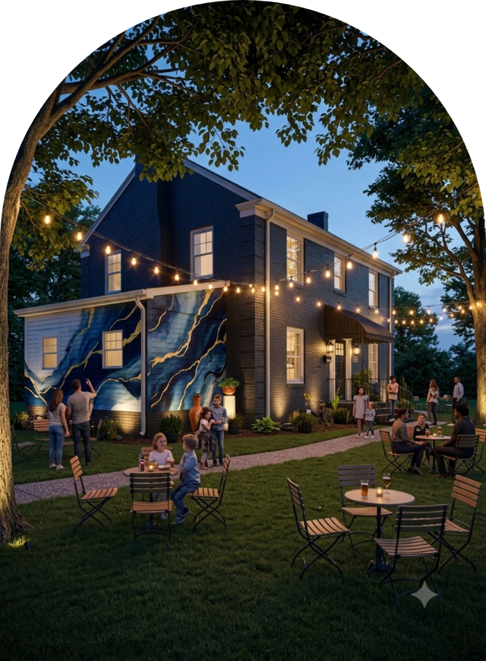
The full story of The Art Haus, written for partners, funders and the community. Pick how you want to use it.
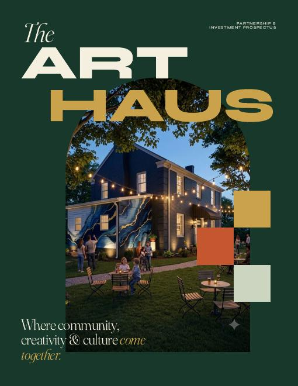
41 pages. Easy to email and works on any phone or computer. Click, then use the download arrow to save it.
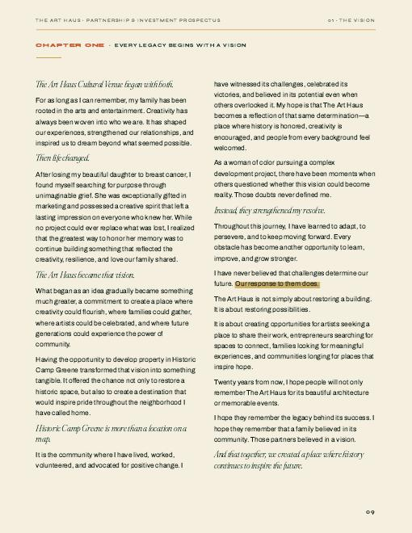
The same prospectus, but you can click any text and type. When you are finished, press Save as PDF. Use Google Chrome.
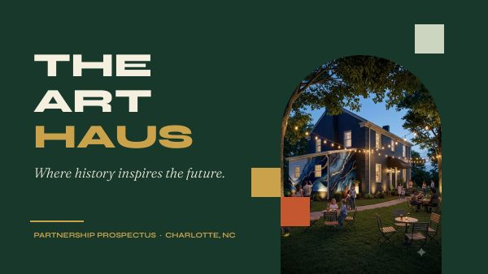
The prospectus as a slideshow, ready for a meeting or a screen. Open it to watch, or make your own copy to change it.
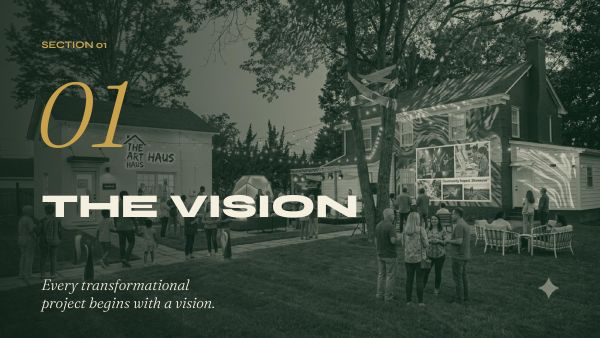
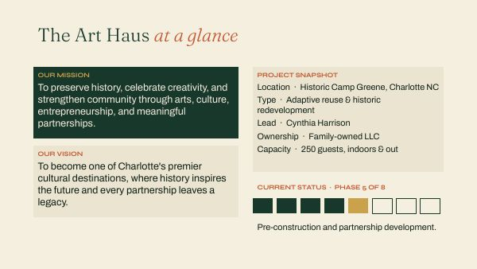
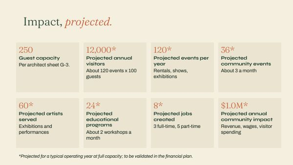
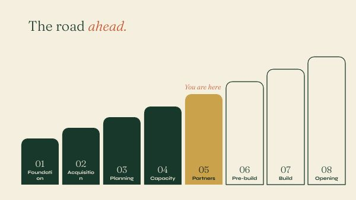
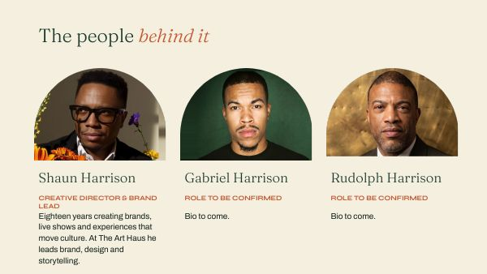
The slideshow has 28 slides. It tells the whole story in short pages; the long letters and chapters are in the PDF.
For grant meetings, speaking events and anything else. It opens on the same cover as the prospectus and comes with 15 ready-made page types. You just type over the words and swap the photos. Every page already looks like The Art Haus.
Click the button. Google will ask if you want to make a copy. Click Make a copy. Your own presentation opens, and the original stays safe.
Start a new presentationJust want to look first? Preview the template.
Use your Gmail address. No Gmail? Make a free one at google.com, it takes two minutes.
Your copy is saved in your own Google Drive. It saves itself as you work, so there is no Save button.
It is a short how-to. Delete it when you are done: click the slide on the left, then press Delete.
On the left you see small pictures of every page. Click the one you want. To use a page again, right-click it and choose Duplicate slide. To remove one, right-click and choose Delete.
Click any text and type. Gray sample words like “Slide title” are there to be replaced. Do not worry about the colors and fonts. They are already set.
Click the photo, then right-click it and choose Replace image, then Upload from computer. The new photo drops into the same frame.
Use the Video or GIF page. For a video: Insert then Video, and paste a YouTube link. For a GIF: Insert then Image then Upload from computer. GIFs move on their own.
Click Slideshow (top right). Use the arrow keys to move. Press Esc to stop.
Click the blue Share button, type an email, and choose Viewer (they can look) or Editor (they can change it). To send a PDF or PowerPoint instead: File then Download.
Duplicate any of these as many times as you need.
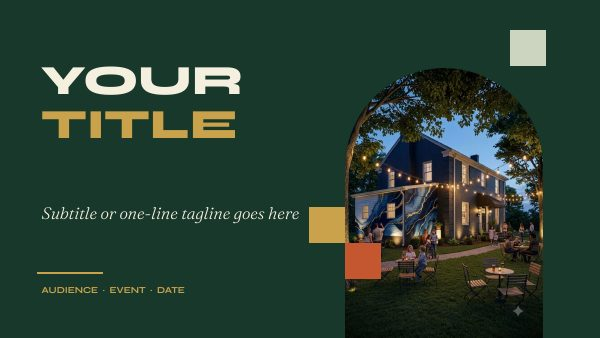
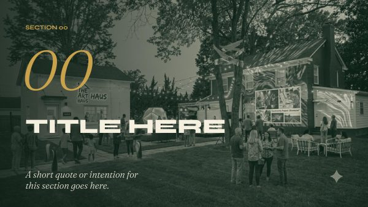
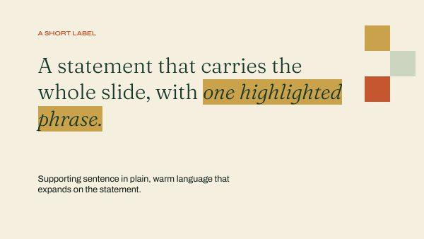
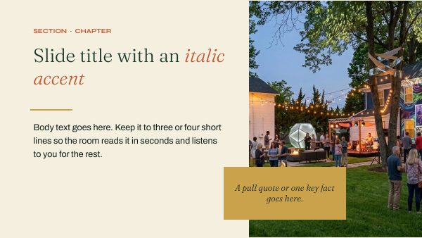
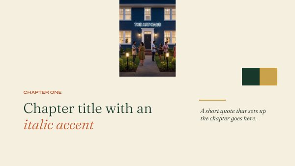
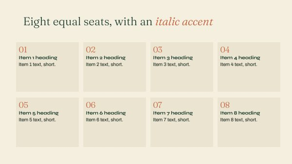
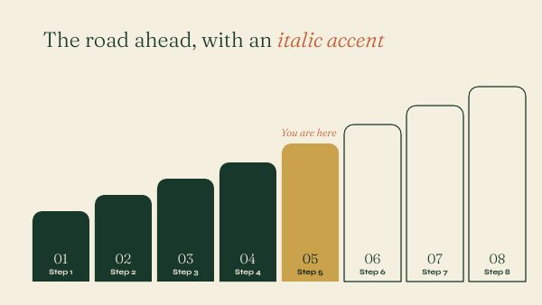
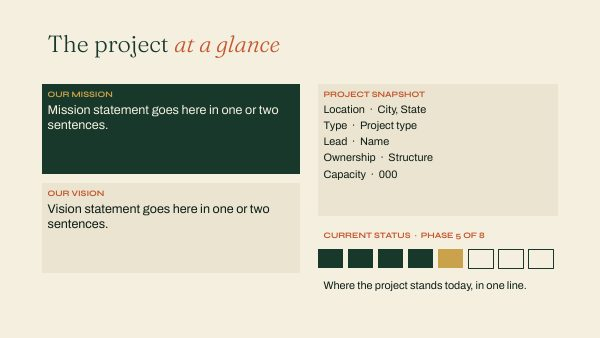
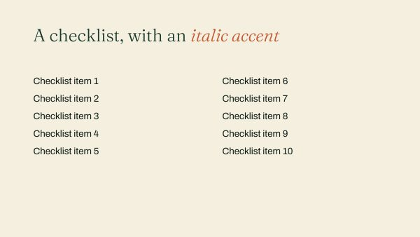
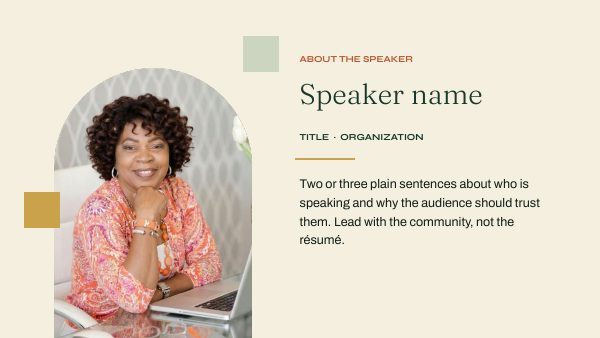
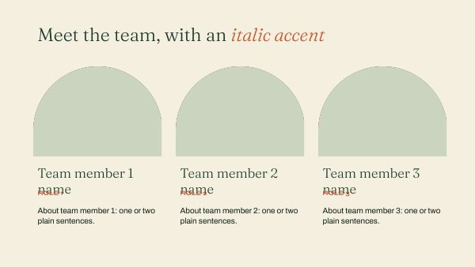
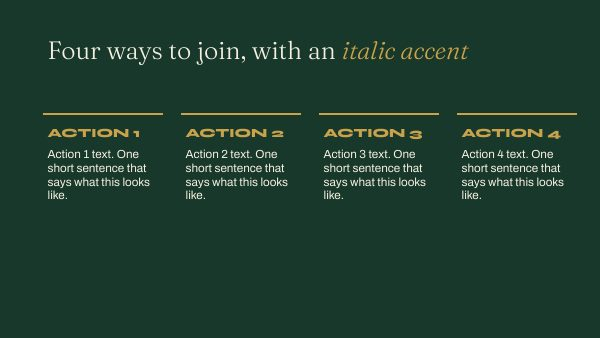
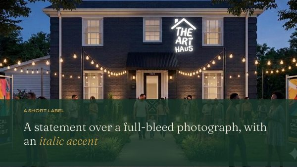
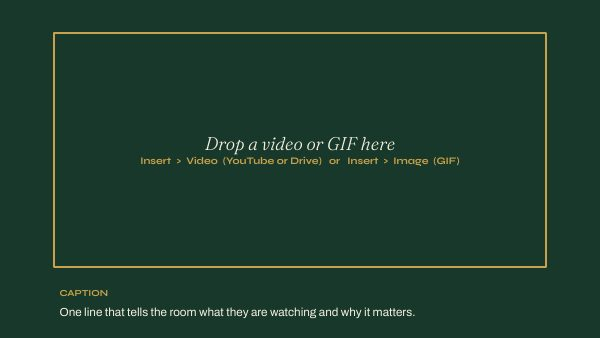
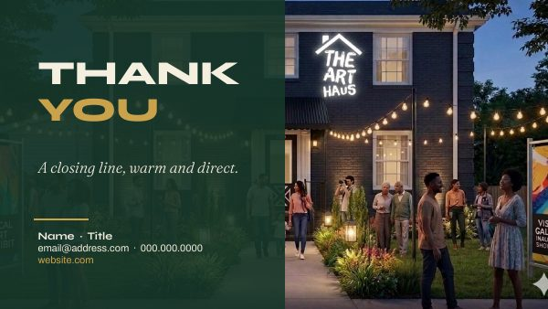
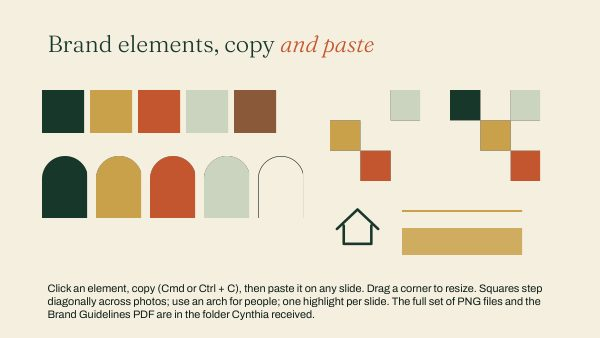
How The Art Haus looks: colors, fonts and the little shapes that make everything feel like us. Hand it to anyone who designs something for The Art Haus.
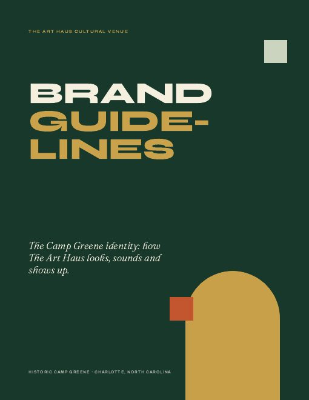
Eight pages: our colors, which font to use and when, the arch and square shapes, photo rules and a do and don’t list.
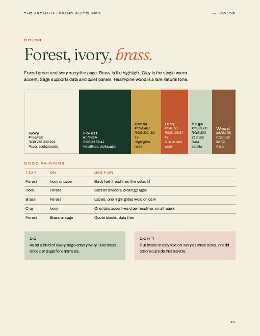
22 ready-made colored squares, arches, lines and highlights. Drag one onto a slide, flyer or Word document.
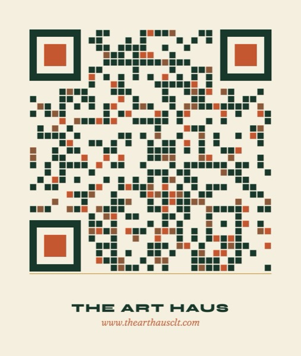
A scannable code in our colors that opens www.thearthausclt.com. Put it on flyers, signs, business cards and slides.
Fonts: Syne for headlines, Fraunces for quotes and titles, Archivo for everything else. All three are free and already built into Google Slides.
That is normal. Sign in with your Gmail address, then the “Make a copy” button appears. If you do not have Gmail, make a free Google account first.
Ask Shaun to share the template with you. It takes him one click.
It is in your Google Drive (drive.google.com) under “My Drive”. Open it any time from any computer or phone.
Press Ctrl + Z on Windows or Command + Z on a Mac to undo. Or use File then Version history to go back to an earlier version.
Yes. In Slides choose File, then Download, then Microsoft PowerPoint. The fonts may change on a computer that does not have them. A PDF always looks right.
Click the title, then make the font size a few points smaller using the number in the toolbar at the top. Or shorten the words.
The sample photos are computer-made drawings of what The Art Haus will look like. Replace them with real photographs as they become available.
The star means projected. They are planning estimates, not results. Shaun has a backup-notes document that explains how each one was figured. Please replace them with your own numbers when you have them.